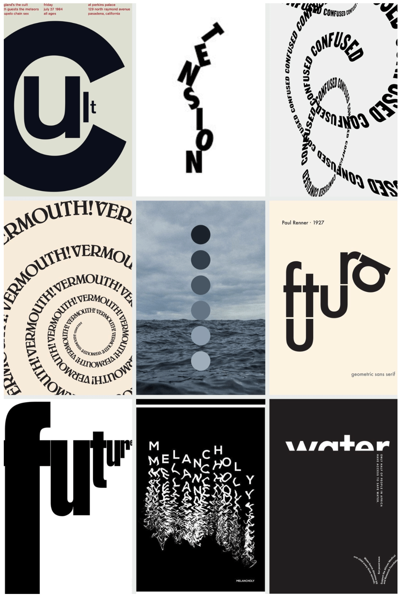

WHAT:
A 30 second narrative video utilizing type in motion featuring music and voiceover of a written passage being read aloud, synchronized with the motion of the typography.
WHY: The objective of the assignment was to explore the ways animated type can be used to convey meaning, emotion, and metaphor.
Before getting to work in Adobe After Effects, I created storyboards to map out how much of the monlogogue I could fit into the 30 seconds I was given as well as how I could use the typography to further the story and mood. Next, I recorded the actor and edited the audio file. Once the audio file was ready, I moved it into my After Effects project where I went through and marked each word in the timeline with a note. That way, when it was time to add the typography in word by word, I knew exactly where to place each word so it would line up with the voiceover.
This monologue is from Melancholy Play: A Contemporary Farce, by Sarah Ruhl. She is my favorite playwright by far, and I was fortunate enough to have the chance to direct this play several years ago. The actor who played this role when I directed the play is reading in the voiceover. I used some footage of rain from Adobe Stock for the background. For sound elements, I found some royalty free cello music (in the stage version, we had a live cellist so I wanted to include that) and rain sound effects. I feel that these assets help enhance the melancholic feeling of the monologue without overpowering the actor's voice or the kinetic type.